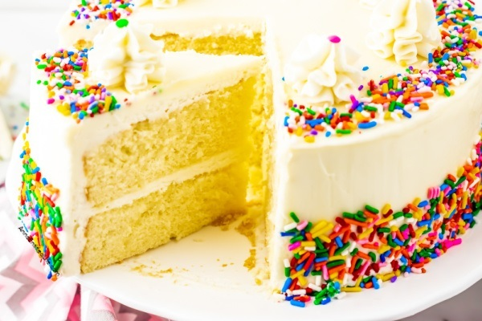

Extra Moist Vanilla Cake

Ingredients:
- All purpose flour
- Eggs
- Baking powder
- Full fat milk
- Sugar
- Oil(1 tablespoon)
- Vanilla extract
Directions
- Whip eggs and sugar
- Gradually add flour
- Melt butter into milk in microwave
- Mix batter into hot milk
- Slowly pour milk mixture back into whipped eggs
- Pour into 2 cake pans
- (Optional) Knock out big air bubbles
- Bake 30 minutes
- Cool upside down
- Decorate!